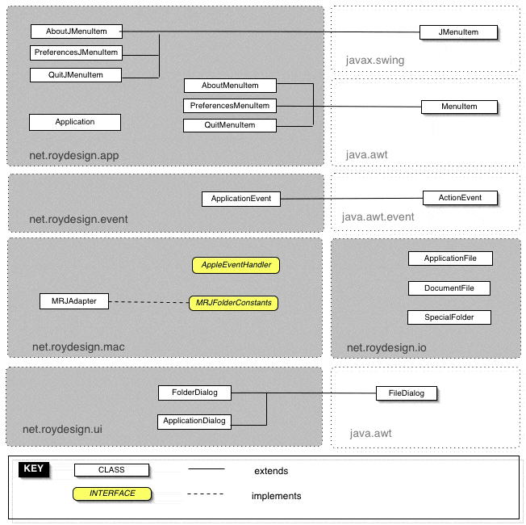
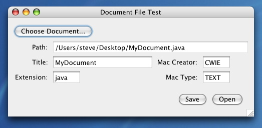
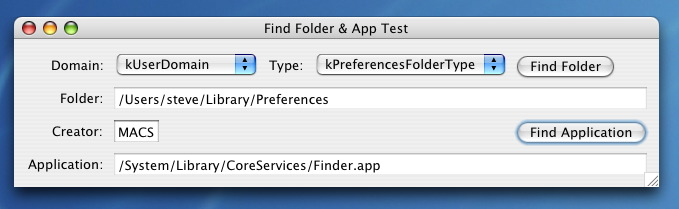
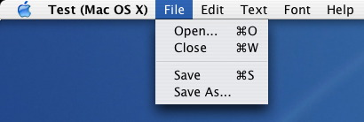
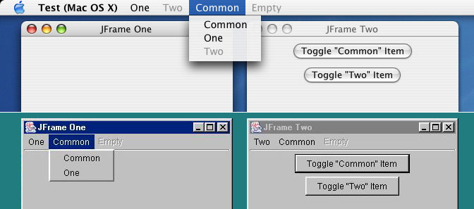

[ Change History
| Features
| Documentation
| Screenshots
| Links ]
The term "MRJ", or Macintosh Runtime for Java, used to be the name
of Apple's Java virtual machine in the days of classic Mac OS. When
Mac OS X came along, the use of the name faded slowly until Apple's Java
1.4 virtual machine came to life, which completely dropped any reference
to the name. Maybe I should drop the reference as well for MRJ Adapter,
but until I do, let's make it clear that MRJ Adapter is a library that
allows your code to work with any and all versions of Apple's Java virtual
machine, from the oldest to the latest and greatest.
MRJ Adapter is partially a wrapper around some APIs provided by Apple
and which are built into their various virtual machines. However, they
have changed over time and some APIs were not always available, so MRJ
Adapter provides a consistent API for the developer wanting to target
the Mac.
MRJ Adapter is an easier path for developers because it is easier to
learn, leveraging concepts they already know, such as action listeners
to handle menu items. It also shields the developer from the problems
associated with compiling their code on other platforms when the APIs
they need only exist on the Mac.
MRJ Adapter incorporates a wealth of knowledge and little-known tricks
about Apple's virtual machines that no developer should be expected to
know off-hand, especially if they come from other platforms. Things
like how to bring up a folder chooser dialog, or how to open a document
with the application that created it are addressed by MRJ Adapter.
MRJ Adapter implements many things the Apple APIs don't address, such
as automatic handling of all-inclusive menu bars, assignment of a menu
bar to be shown when no frame is visible, and more.
I wrote this library because I needed this functionality in my work
and I found that it would be of interest to many other developers.
Version 1.2
- Fixed bug associated with Java for Mac OS X 10.6 Update 3 where the Preferences menu item does not appear in the application menu when attaching an ActionListener to it.
Version 1.1
- Fixed frameless menu bar was showing a frame under certain circumstances.
- Fixed parsing of mrj.version property on Mac OS X 10.5.
- Fix for NullPointerException when using StandardMacAboutFrame in CDE/Motif L&F.
- Renamed 'enum' variables for compilation with Java 1.5.
- Fixed MRJAdapter.getFileCreator() to work with application bundles.
Unified APIs & Functionality
- Get and set file types and creator codes.
- Find special folders defined by the OS.
- Find applications by creator code.
- Find resource files in application bundles.
- Open URLs in the user's favorite browser.
- Handle the OS-provided About, Preferences and Quit menu items.
- Enable and disable the Preferences menu item.
- Handle the Apple events Open Application, Reopen Application, Quit Application, Open Document, and Print Document.
MRJ Adapter Specific Additions
- Handle the OS-provided Preferences menu item on MRJ 3.0 and MRJ 3.1 (Java 1.3.1 on Mac OS X). This was only introduced by Apple in MRJ 3.2.
- Handle the Reopen Application event on MRJ 2.x and 3.x. This was only introduced by Apple in MRJ 4.3.
- Enable and disable the Preferences menu item in VMs prior to Java 1.4.1. This was missing before 1.4.1.
- Find applications in MRJ 3.0 and up (Java 1.3.1 and up). This was dropped by Apple starting with MRJ 3.0.
- Open URLs in the user's favorite browser in VMs prior to MRJ 2.2. This was missing before MRJ 2.2.
- Find out whether the About, Preferences and Quit menu items are provided by the OS or not on the current platform. This was different on classic Mac OS than it is on Mac OS X, is never the case on other platforms, and there is no method in the Apple APIs to discover this.
- Multiple listeners for all Mac-specific events. The Apple APIs lacked this before MRJ 4.1 (Java 1.4.1).
- Handling of all Mac-specific events via familiar MenuItems, JMenuItems, ActionEvents, ActionListeners and Actions. The Apple APIs use Mac-specific events and listeners.
- Find out whether Swing is currently using the screen menu bar or not. This can be true or false depending on the system properties set, and on the Swing L&F currently in use, and there is no method in the Apple classes to discover this.
- Set a menu bar to be shown when no frame is visible. This is a normal state for a Mac application and Java has no built-in facility to do this, nor does Apple provide any API for it.
- Get the name of the startup disk. This has always been missing from the Apple APIs.
- Bring up a dialog for choosing a folder. There was a way to do this in the Apple VMs prior to 1.4.1, but it was undocumented.
- Bring up a dialog for choosing an application on disk. A convenience that makes use of the working FilenameFilter on the Mac, and which also makes sure bundles are not traversable.
- Launch applications as well as open documents, either by the application that created them or by one of your choice, all in a way that isolates your code from highly platform dependant mechanisms. This is missing in the Apple APIs.
- Retrieve file types and creator codes from Mac bundles stored on other platforms.
- Find out if the underlying platform implements Apple's JDirect technology, and if so, which version of it.
- Create menu bars that are automatically all-inclusive on Mac OS while remaining distinct to each frame on other platforms. There is nothing built into Java to do this, and Apple never provided a solution for it.
- Use actions with JMenuItems in Swing 1.1 as well as AWT MenuItems. This functionality was introduced by Sun in Swing in Java 1.2, and AWT doesn't support actions.
- Have menus automatically disable themselves when all their items become disabled. Conversely, have menus enable themselves when any item becomes enabled.
- Show a standard About box similar to the one provided by the Cocoa framework on Mac OS X, while being cross-platform.
- Open the resource fork of a file.
Other Features
- Supports Java 1.1 and up on all platforms, starting with MRJ 1.5 (Java 1.1) on classic Mac OS all the way through JDK 1.4.2 on Mac OS X.
- Supports both AWT and Swing.
- Easy compilation on other platforms. If you link with MRJAdapter.jar, there is no need for stubs of any kind. It will just work, on any platform.
- Stubs provided for compilation of MRJ Adapter on platforms other than the Mac. This is just for compiling, and the stubs don't need to be included in the resulting JAR file.
View the API documentation
Class Diagram

Class diagram generously created by Matthieu Cormier.
The following screen shots are taken from the sample programs included with
MRJ Adapter and show only a small subset of what MRJ Adapter allows you
to do.
This first image shows a sample program that uses MRJ Adapter to get the
information of a file on disk. This information can be edited and changed.
The file can also be opened using the application that created it or an
application of your choice (not shown), which is something that is highly
platform specific, and which supports Windows as well and can be extended
to other platforms. This functionality is provided by the
net.roydesign.io.DocumentFile class.

The next screen shot shows how special folders and specific applications
can be found on disk. Finding folders is mostly functional on Mac OS at this
point, and finding applications currently works by the Mac-specific creator
codes. See the classes net.roydesign.io.SpecialFolder and
net.roydesign.io.ApplicationFile.

This seemingly trivial image shows something rather important in the
Mac OS realm, namely the concept of an application that has a menu bar but
no windows, which is a normal and desirable state for a well designed
Mac application, but something that Java doesn't natively support because
menu bars must always be attached to frames. MRJ Adapter makes it possible with
the method net.roydesign.mac.MRJAdapter.setFramelessJMenuBar().

Finally MRJ Adapter provides a set of classes to properly handle the
screen menu bar of Mac OS, which is usually all-inclusive in Mac applications,
but different on Windows and other platforms. By using the menu classes in
the package net.roydesign.ui, your application will behave
correctly on any platform, without cluttering your code with
if (macos) statements and whatnot.

The following applications use MRJ Adapter:
The following articles mention MRJ Adapter: